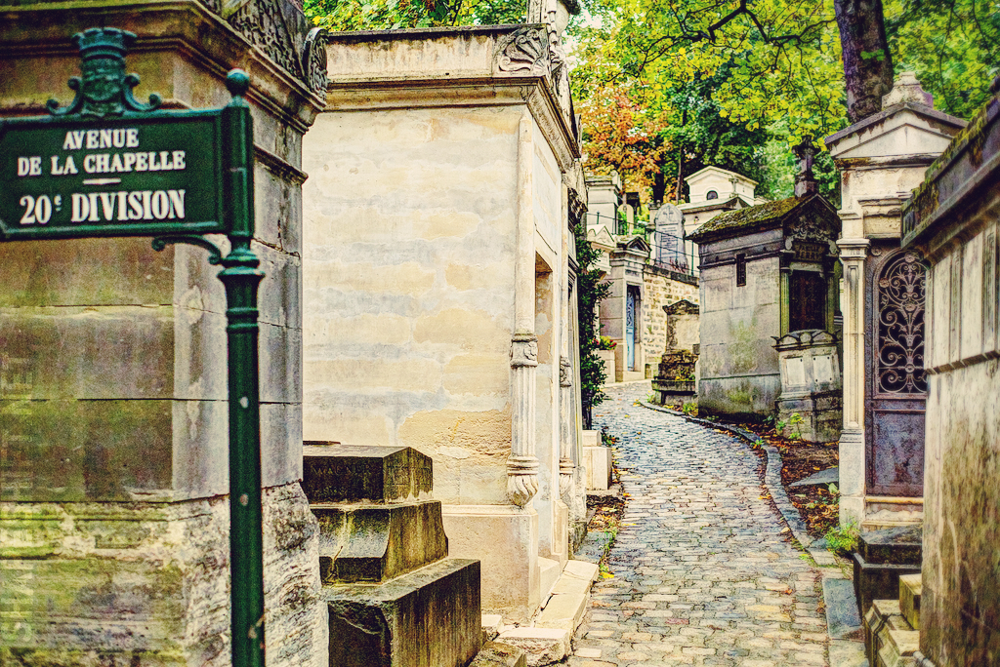

| Home | Top 10 Things To Do In The French Rivera | Top 10 Romantic Things To Do in Paris France | Ten Top Places To Visit In Paris |
|
|||
Top 10 Romantic Things To Do in Paris France
|
Until Death Do Us Apart-Père Lachaise CemeterySending you to a cemetery in search of romance is probably going to sound a little odd, but then again, this is Paris. Yes, trust the city of romance to have made its largest cemetery not in the least bit spooky but rather, irresistibly romantic. Père Lachaise is like a miniature city of its own; all the winding pathways have their own street signs and names, and the tombs look like beautiful little Wendy houses. Strolling hand in hand with your other half, I guarantee you’ll start, rather bizarrely, hoping that one day you can be buried here with the love of your life.Paris counts within its walls many of the world's most poetic cemeteries-- but Père-Lachaise outdoes them all. Countless famous figures are buried here: the most popular being The Doors lead singer Jim Morrison, whose tomb is kept constant vigil by fans. The French playwright Molière, Oscar Wilde, Edith Piaf, and Richard Wright are a few others. On a sunny day, climbing to the cemetery's summit and looking down on the lavishly designed crypts can be surprisingly joyful. P.S. Notable nearby suggestions for eating/ drinking: Les Mondes Bohèmes, a hidden terrace in the 20th and Le Soleil Levant, the perfect local schmocal and don’t forget to check out the curious caravan de Paris! Père Lachaise Cemetery, 16 rue du Repos 75020 Paris, free entry. |